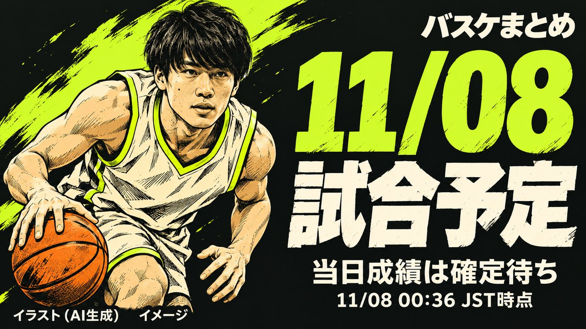

11/08 出場予定選手（登録選手）のベスト5

試合予定
各試合の状態は 2026-11-08 00:36 JST 時点の公式記録です（試合前／開始・公式記録未確定／終了）。
B.PREMIER
秋田—信州14:05 試合前三河—滋賀15:05 試合前A東京—三遠17:05 試合前佐賀—千葉J17:05 試合前B.ONE
鹿児島—熊本13:05 試合前立川—香川14:05 試合前八王子—埼玉14:05 試合前福井—岡山14:05 試合前静岡—岩手14:05 試合前愛媛—福岡14:05 試合前青森—山形15:05 試合前東京Z—福島15:05 試合前横浜EX—越谷15:05 試合前岐阜—金沢15:05 試合前FE名古屋—東京U15:35 試合前B.NEXT
山口—湘南14:05 試合前試合結果 ／ 当日の EFF
当日のEFF・ポジション別TOP3
実際に出場した選手・公式試合スタッツ
B.PREMIER
全試合の公式記録確定待ち。確定後に掲載します。
B.ONE
全試合の公式記録確定待ち。確定後に掲載します。
B.NEXT
全試合の公式記録確定待ち。確定後に掲載します。
出典・選出ルール・注記
当日TOP3は全試合の公式記録確定後、出場時間がある選手の公式EFFでリーグ別・ポジション別に選出します。今季平均や予想とは別集計です。
公式登録の兼任ポジションは各部門の対象です。
同率は同順位、同率内は選手IDの昇順で最大3人を表示します。
ポジションは資料取得時点の公式登録で、当日の起用位置を断定しません。
未取得値は0に置き換えません。
EFF＝得点＋REB＋AST＋ST＋BS＋被ファウル－TO－被ブロック－ファウル－外した2P・3P・FT。順位には公式配信EFFを使用し、内訳からの再計算で置き換えません。公式用語集
資料取得 2026-11-08 00:36〜2026-11-08 00:37 JST
出典：B.LEAGUE公式
B.PREMIER 公式日程・結果（取得 2026-11-08 00:36 JST）
B.ONE 公式日程・結果（取得 2026-11-08 00:36 JST）
B.NEXT 公式日程・結果（取得 2026-11-08 00:37 JST）
公式試合詳細（取得 2026-11-08 00:36 JST）
公式試合詳細（取得 2026-11-08 00:36 JST）
公式試合詳細（取得 2026-11-08 00:36 JST）
公式試合詳細（取得 2026-11-08 00:36 JST）
公式試合詳細（取得 2026-11-08 00:37 JST）
公式試合詳細（取得 2026-11-08 00:36 JST）
公式試合詳細（取得 2026-11-08 00:36 JST）
公式試合詳細（取得 2026-11-08 00:36 JST）
公式試合詳細（取得 2026-11-08 00:36 JST）
公式試合詳細（取得 2026-11-08 00:37 JST）
公式試合詳細（取得 2026-11-08 00:36 JST）
公式試合詳細（取得 2026-11-08 00:36 JST）
公式試合詳細（取得 2026-11-08 00:36 JST）
公式試合詳細（取得 2026-11-08 00:36 JST）
公式試合詳細（取得 2026-11-08 00:37 JST）
公式試合詳細（取得 2026-11-08 00:37 JST）